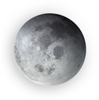

¿Quién no ha consultado nunca su horóscopo?
Albanta San Román es una de las astrólogas más famosas de este país. Muy activa en las redes sociales, si le escribes preguntándole por tu futuro, es muy probable que te responda.


¿Quién no ha consultado nunca su horóscopo?
Albanta San Román es una de las astrólogas más famosas de este país. Muy activa en las redes sociales, si le escribes preguntándole por tu futuro, es muy probable que te responda.
HORÓSCOPO SEMANAL
DEL 9 AL 15 DE DICIEMBRE
TE SUGIERO...
Aprovechando el despertar de la naturaleza pidamos esta noche deseos
Elementos: Papel de aluminio, Flores, Cartulina blanca y Rotulador verde
Haces un círculo con papel de aluminio para simbolizar la Luna y alrededor colocas flores. A continuación, dibujas en una cartulina blanca un triángulo de color verde y escribes dentro todo lo que deseas atraer a tu vida (amor, dinero, salud…). Después, pones la cartulina encima del círculo y lo cubres todo con las flores.
Todo ello lo dejas toda la noche cerca de una ventana para atraer mejor las mágicas energías de la Luna, y a la mañana siguiente guardas en una cajita los deseos hasta el 31.
El 31, antes de acabar el año, mojas en agua la cartulina donde has escrito los deseos y la tiras, y las flores las trituras con las manos y las esparces al viento.
call 96 841 562